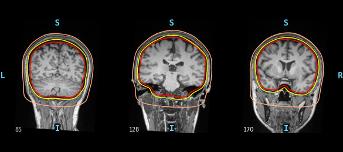
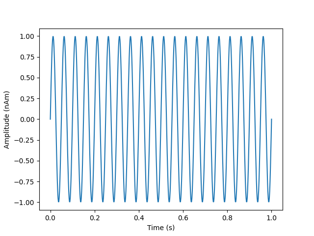

Note
Go to the end to download the full example code
Laminar model comparison with FEM, BEM, and single-shell forward models#
We’ll simulate a 20 Hz signal at each of the 11 cortical depths in sub-104 using a finite element model (FEM). Can we recover the simulated depth with a FEM, a boundary element model (BEM) or a single-shell model? We’ll fit the three models to the same noisy recording at each depth, using the free-energy comparison from Tutorial 02 and Bonaiuto et al. (2018).
Setting up the simulation#
Run this notebook from the laMEG tutorials directory with the test data in ../test_data. Install the FEM extra with pip install -e '.[fem]' from the repository root and build the DUNEuro Python bindings for the notebook environment. The FEM also requires a SimNIBS CHARM mesh for the same subject.
For this example, run charm sub-104 ../fs/sub-104/mri/orig.nii --forcesform once from test_data/sub-104 in your SimNIBS environment. The qform is unset in this T1, so we use the sform that the notebook reads for its MRI coordinates. CHARM writes the mesh to m2m_sub-104/sub-104.msh. Inspect the segmentation in CHARM’s results.html. If you already have a CHARM mesh in this coordinate frame, set charm_fname below to its location.
import os
import shutil
import tempfile
# Check the optional FEM packages before starting the forward calculations.
import duneuropy
import meshio
import matplotlib.pyplot as plt
import mne
import nibabel as nib
import numpy as np
import spm_standalone
import matlab
from mne.transforms import Transform, apply_trans
from lameg.forward import ForwardOperator, compute_duneuro_forward, compute_mne_forward
from lameg.invert import attach_forward_operator, coregister
from lameg.laminar import model_comparison
from lameg.simulate import run_current_density_simulation
from lameg.surf import LayerSurfaceSet
from lameg.util import get_fiducial_coords
from lameg.viz import show_surface
subj_id = 'sub-104'
ses_id = 'ses-01'
test_dir = os.path.abspath('../test_data')
meg_dir = os.path.join(test_dir, subj_id, 'meg', ses_id)
# Use the same subject's MRI, cortical surfaces and recording for all three models.
surf_set = LayerSurfaceSet(subj_id, 11, subjects_dir=os.path.join(test_dir, 'fs'))
charm_fname = os.path.join(test_dir, subj_id, f'm2m_{subj_id}', f'{subj_id}.msh')
if not os.path.isfile(charm_fname):
raise FileNotFoundError(f'Set charm_fname to the CHARM mesh for {subj_id}: {charm_fname}')
fid_coords = get_fiducial_coords(subj_id, os.path.join(test_dir, 'participants.tsv'))
data_base = f'spm-converted_autoreject-{subj_id}-{ses_id}-001-btn_trial-epo'
data_file = os.path.join(meg_dir, 'spm', data_base + '.mat')
fif_file = os.path.join(meg_dir, 'mne', f'autoreject-{subj_id}-{ses_id}-001-btn_trial-epo.fif')
info = mne.io.read_info(fif_file)
spm = spm_standalone.initialize()
We’ll work on a copy of the recording in a temporary directory.
tmp_dir = tempfile.mkdtemp()
base_fname = shutil.copy(data_file, tmp_dir)
shutil.copy(os.path.splitext(data_file)[0] + '.dat', tmp_dir)
Building the BEM forward model#
SPM and MNE use different MRI coordinate systems. We’ll put the skull, scalp and MRI fiducials in FreeSurfer surface RAS, then match the MRI fiducials to their measured positions in the MEG head frame.
# Both MRI transforms start at the same voxel coordinates.
voxel_to_ras = nib.load(os.path.join(surf_set.subj_dir, 'mri', 'orig.mgz')).header.get_vox2ras_tkr()
voxel_to_native = nib.load(os.path.join(surf_set.subj_dir, 'mri', 'orig.nii')).affine
native_to_ras = voxel_to_ras @ np.linalg.inv(voxel_to_native)
mri_fids = [fid_coords[key] for key in ('nas', 'lpa', 'rpa')]
mri_fids = apply_trans(native_to_ras, mri_fids) / 1000 # MNE uses metres.
dig = info.get_montage().get_positions()
head_fids = [dig[key] for key in ('nasion', 'lpa', 'rpa')]
trans = Transform('mri', 'head', mne.coreg.fit_matched_points(mri_fids, head_fids))
For the MEG forward model, we’ll use a three-compartment BEM representing the brain, skull and scalp. The contours show the inner skull (red), outer skull (yellow) and scalp (orange) on the subject’s MRI.
# Build the MNE subject in the temporary directory so the original anatomy is preserved.
bem_dir = os.path.join(tmp_dir, subj_id, 'bem')
mri_dir = os.path.join(tmp_dir, subj_id, 'mri')
os.makedirs(bem_dir)
os.makedirs(mri_dir)
shutil.copy(os.path.join(surf_set.subj_dir, 'mri', 'orig.mgz'), mri_dir)
# Use the three SPM boundaries at the same resolution.
boundaries = {
'inner_skull': surf_set.load_head_mesh('iskull'),
'outer_skull': surf_set.load_head_mesh('oskull'),
'outer_skin': nib.load(os.path.join(surf_set.subj_dir, 'mri', 'origscalp_2562.surf.gii')),
}
for name, mesh in boundaries.items():
vertices = apply_trans(native_to_ras, mesh.agg_data('pointset'))
faces = mesh.agg_data('triangle')
mne.write_surface(os.path.join(bem_dir, f'{name}.surf'), vertices, faces, overwrite=True)
model = mne.make_bem_model(
subj_id,
subjects_dir=tmp_dir,
ico=None,
conductivity=(0.3, 0.006, 0.3), # brain, skull, scalp (S/m)
)
bem_solution = mne.make_bem_solution(model)
mne.viz.plot_bem(
subject=subj_id, subjects_dir=tmp_dir, mri='orig.mgz',
slices=[85, 128, 170], show=False,
)
plt.show()


Coregister the recording to the multilayer mesh.
# Coregister data to multilayer mesh
skull_fname = os.path.join(surf_set.subj_dir, 'mri', 'origiskull_2562.surf.gii')
coregister(
fid_coords,
base_fname,
surf_set,
iskull_fname=skull_fname,
spm_instance=spm
)
We’ll use the BEM solution to compute the gain on each cortical surface. laMEG projects the lead fields onto the link vectors and keeps the vertices that MNE retained at every depth.
prepared = compute_mne_forward(
surf_set, bem_solution, info, trans,
reference=base_fname,
output_dir=tmp_dir,
allow_nominal_ctf_coils=True
)
bem = prepared.operator
surfaces = prepared.surfaces
print(f'{bem.n_columns:,} of {surf_set.get_vertices_per_layer():,} vertices retained per surface')
Building the FEM forward model#
The CHARM mesh supplies the tissue compartments. The coregistered recording supplies the measured CTF coil positions and channel weights. DUNEuro computes the field for a unit dipole along each signed link vector. The FEM uses SimNIBS tissue conductivities in S/m. We keep the cortical columns whose dipoles are in gray matter at every depth and use those same columns for all three models.
fem_prepared = compute_duneuro_forward(
surfaces, charm_fname, reference=base_fname, output_dir=tmp_dir,
)
fem = fem_prepared.operator
bem = fem_prepared.restrict_operator(bem)
surfaces = fem_prepared.surfaces
layer_names = surfaces.get_layer_names()
n_layers = len(layer_names)
Building the single-shell forward model#
We’ll compute the single-shell gain on the shared cortical surfaces for comparison.
coregister(
fid_coords, base_fname, surfaces,
forward_model_type='Single Shell', iskull_fname=skull_fname,
viz=False, spm_instance=spm
)
# Ask SPM to compute the gain, then read it into laMEG.
modes_fname = os.path.join(tmp_dir, 'single_shell_modes.mat')
spm.spm_eeg_inv_prep_modes_xval(
base_fname, matlab.double([]), modes_fname, 1.0, 0.0, nargout=0
)
single_shell = ForwardOperator.from_spm(
base_fname, surfaces.get_mesh_path(), surfaces.get_layer_names(), allow_undefined_gain=True
)
models = [('FEM', fem), ('BEM', bem), ('Single shell', single_shell)]
print(f'All three models use {fem.n_columns:,} cortical vertices per layer.')
Simulating a signal#
We’ll simulate one second of a 20 Hz sine wave with a dipole moment of 1 nA m.
# Frequency of simulated sinusoid (Hz)
freq = 20
# Strength of simulated activity (nAm)
dipole_moment = 1
# Sampling rate (must match the data file)
s_rate = 600
# Generate 1s of a sine wave at a sampling rate of 600Hz (to match the data file)
time = np.linspace(0,1,s_rate+1)
sim_signal = np.sin(time*freq*2*np.pi).reshape(1,-1)
fig=plt.figure()
plt.plot(time,dipole_moment*sim_signal[0,:])
plt.xlabel('Time (s)')
plt.ylabel('Amplitude (nAm)')
plt.show()


We’ll simulate near the original tutorial vertex (44523). If that column was excluded, we’ll take the nearest usable pial vertex. The patch centre needs a defined orientation at every depth and neighbours on the retained surface.
pial = nib.load(surf_set.get_mesh_path('pial')).agg_data('pointset')
original_ids = fem_prepared.support.original_vertices
# These compact columns belong to a retained triangle, so they have neighbours for smoothing.
candidates = np.unique(fem.faces)
defined = fem.orientation_defined.reshape(n_layers, -1).all(axis=0)
candidates = candidates[defined[candidates]]
if not len(candidates):
raise ValueError('No connected cortical column has a defined orientation at every depth.')
target_vertex = 44523
vertices = original_ids[candidates]
if target_vertex in vertices:
sim_vertex = target_vertex
else:
distance = np.linalg.norm(pial[vertices] - pial[target_vertex], axis=1)
sim_vertex = vertices[np.argmin(distance)]
column = fem_prepared.support.map_indices([sim_vertex])[0]
print(f'Simulating at original vertex {sim_vertex}.')
# Centre the view on the selected pial vertex.
centre = pial[sim_vertex]
cam_view = [*(centre + [271, -11, -57]), *centre, 0.25, 0, 1]
plot = show_surface(surf_set, layer_name='pial', orientation='link_vector', fixed=True,
marker_vertices=sim_vertex, marker_size=5, camera_view=cam_view)
Plotting the forward models#
The first row shows the field at the sensors for a 1 nA m dipole on the white matter surface. The second row shows the signed difference between each pair of forward models.
# Match the recording's channels before subtracting the sensor fields.
assert all(forward.channel_names == fem.channel_names and forward.channel_units == fem.channel_units
for _, forward in models)
picks = mne.pick_channels(info.ch_names, list(fem.channel_names), ordered=True)
sensor_info = mne.pick_info(info, picks)
names = [name for name, _ in models]
fields = [forward.layer('white').gain[:, column] for _, forward in models]
pairs = [(0, 1), (0, 2), (1, 2)]
differences = [fields[i] - fields[j] for i, j in pairs]
pair_names = [f'{names[i]} − {names[j]}' for i, j in pairs]
fig, axes = plt.subplots(2, 3, figsize=(11, 6), constrained_layout=True)
for row, maps, titles, label in [(axes[0], fields, names, 'Field (fT)'),
(axes[1], differences, pair_names, 'Field difference (fT)')]:
# A shared scale within each row makes the amplitudes directly comparable.
limit = np.max(np.abs(maps)) or 1.
for ax, field, title in zip(row, maps, titles):
im, _ = mne.viz.plot_topomap(
field, sensor_info, ch_type='mag', axes=ax, show=False, cmap='RdBu_r',
vlim=(-limit, limit), contours=0, sensors=False
)
ax.set_title(title)
fig.colorbar(im, ax=row, label=label)
plt.show()
Simulating each layer with FEM#
We’ll attach the multilayer FEM gain to the recording, which is already registered to the shared mesh. For each simulated depth we’ll then fit all 11 candidate layers with each forward model, using one noisy recording for the three fits.
attach_forward_operator(base_fname, fem, 0, spm, surfaces.get_mesh_path())
sim_patch_size = 5 # mm
SNR = -5 # dB
all_layerF = {name: np.empty((n_layers, n_layers)) for name, _ in models}
for l, layer in enumerate(layer_names):
print(f'Simulating on layer {l} ({layer})')
vertex = surfaces.get_multilayer_vertex(layer, column)
sim_fname = run_current_density_simulation(
base_fname, f'fem_{sim_vertex}_{l}_', vertex, sim_signal, dipole_moment,
sim_patch_size, SNR, viz=False, spm_instance=spm
)
for name, forward in models:
# Each fit updates its SPM header. Copy the same signal and noise into a fresh directory.
with tempfile.TemporaryDirectory(dir=tmp_dir) as fit_dir:
fit_fname = shutil.copy(sim_fname, fit_dir)
shutil.copy(os.path.splitext(sim_fname)[0] + '.dat', fit_dir)
F, _ = model_comparison(
fid_coords, fit_fname, surfaces, forward_operator=forward,
forward_kwargs={'iskull_fname': skull_fname},
# Keep the same sensor space for every gain when comparing free energies.
invert_kwargs={'patch_size': 5, 'n_temp_modes': 4, 'n_spatial_modes': 'all'},
viz=False, spm_instance=spm
)
all_layerF[name][l, :] = F
Comparing the layer estimates#
For each forward model, plot free energy relative to the worst layer for that simulation. The dashed line shows perfect recovery of simulated depth (0 is pial, 10 is white matter).
layers = np.arange(n_layers)
col_r = plt.cm.cool(np.linspace(0, 1, n_layers))
fig, axes = plt.subplots(len(models), 2, figsize=(10, 10), sharex='col', sharey='col')
for row, (name, _) in enumerate(models):
F = all_layerF[name]
ax_curves, ax_peaks = axes[row]
# Each colored line is one simulated depth.
for l in layers:
ax_curves.plot(layers, F[l] - F[l].min(), color=col_r[l], label=str(l))
ax_curves.set_title(name)
ax_curves.set_ylabel(r'$\Delta F$')
# For each simulation, find the evaluated layer with the highest free energy.
ax_peaks.plot(layers, np.argmax(F, axis=1), 'o-')
ax_peaks.plot([0, n_layers - 1], [0, n_layers - 1], 'k--')
ax_peaks.set_title(name)
ax_peaks.set_ylabel(r'Layer with peak $\Delta F$')
ax_peaks.set_yticks(layers)
axes[0, 0].legend(title='Sim layer', ncol=2, fontsize=8)
axes[-1, 0].set_xlabel('Evaluated layer')
axes[-1, 1].set_xlabel('Simulated layer')
for ax in axes[-1]:
ax.set_xticks(layers)
plt.tight_layout()
plt.show()
To compare evidence between forward models as well as layers, we’ll use a common zero for each simulated recording. Each column is relative to the lowest free energy across all three solvers and all 11 candidate layers. The crosses mark each solver’s best-fitting depth.
# The three axes of F index forward model, simulated layer and evaluated layer.
F = np.stack([all_layerF[name] for name, _ in models])
relative_F = F - F.min(axis=(0, 2), keepdims=True)
fig, axes = plt.subplots(1, len(models), figsize=(13, 4), sharey=True, constrained_layout=True)
for ax, (name, _), values in zip(axes, models, relative_F):
im = ax.imshow(values.T, cmap='Spectral_r', vmin=0, vmax=relative_F.max(),
interpolation='nearest')
for l, peak in enumerate(np.argmax(values, axis=1)):
ax.text(l, peak, 'X', ha='center', va='center', weight='bold')
ax.set_title(name)
ax.set_xlabel('Simulated layer')
ax.set_xticks(layers)
ax.set_yticks(layers)
axes[0].set_ylabel('Evaluated layer')
fig.colorbar(im, ax=axes, label=r'$\Delta F$')
plt.show()
Here FEM generated the data. The results show how changing the forward model affects depth recovery for this source location and SNR.
We’ll close SPM and remove the temporary files when we’re finished.
spm.terminate()
# Delete simulation files
shutil.rmtree(tmp_dir)
Total running time of the script: (0 minutes 0.000 seconds)